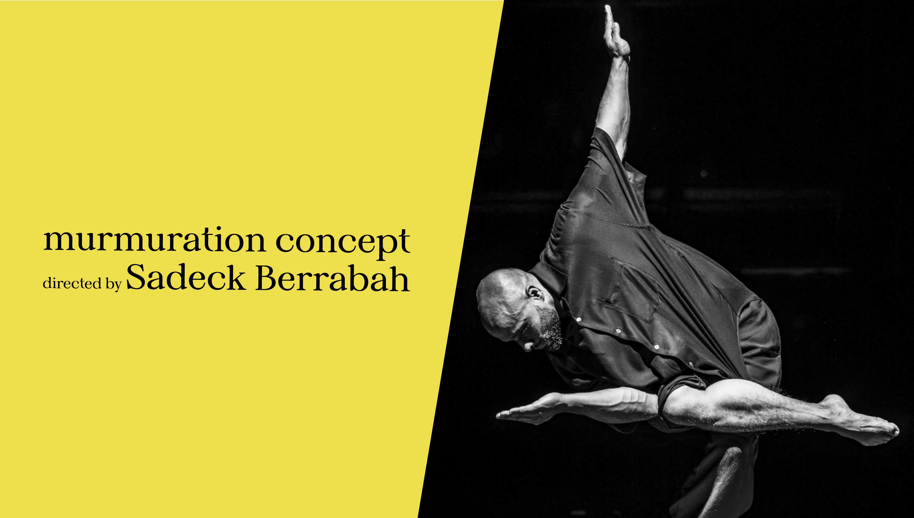

dusk, sky,
& thousands
of wings a natural phenomenon
A murmuration is a natural phenomenon where hundreds or thousands of birds, often starlings, fly together in fluid, ever-changing formations. Without any single leader, each bird responds only to the movement of nearby birds, creating a highly coordinated collective pattern. Scientists believe this behavior helps protect the flock from predators and keeps the group together, while beyond biology it has also become a powerful symbol of collective intelligence, harmony, and emergence.


from sky
to stage
the choreography of murmuration concept
Murmuration Concept is a dance project led by choreographer Sadeck Berrabah that draws inspiration from the natural phenomenon of bird murmurations. In their performances, groups of dancers move in tightly coordinated formations, creating shifting geometric patterns that echo the fluid motion of flocks in the sky. Rather than focusing on individual dancers, the choreography emphasizes collective movement, precision, and synchronization. Through waves of arms, circular formations, and constantly transforming spatial patterns, the dancers create a visual experience that mirrors the organic flow and collective intelligence seen in murmuration, transforming a natural phenomenon into a living, human choreography.

Sadeck Berrabah
transforming murmuration
into human choreography
Sadeck Berrabah is a French choreographer and visual artist known for his distinctive style of large-scale synchronized choreography. Trained in hip-hop and street dance, he developed a unique movement language that emphasizes collective precision, symmetry, and geometric formations. Berrabah gained international recognition through his project Murmuration Concept, in which groups of dancers move together as a unified system, creating flowing visual patterns inspired by the natural phenomenon of bird murmurations. His work merges dance, visual composition, and spatial design, transforming the stage into a living kinetic image where individual bodies contribute to a powerful collective form.

murmuration
at the armory
a monumental performance
by murmuration concept
A murmuration is a natural phenomenon where hundreds or thousands of birds, often starlings, fly together in fluid, ever-changing formations. Without any single leader, each bird responds only to the movement of nearby birds, creating a highly coordinated collective pattern. Scientists believe this behavior helps protect the flock from predators and keeps the group together, while beyond biology it has also become a powerful symbol of collective intelligence, harmony, and emergence.
